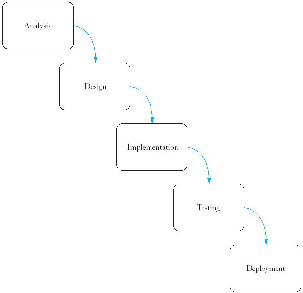
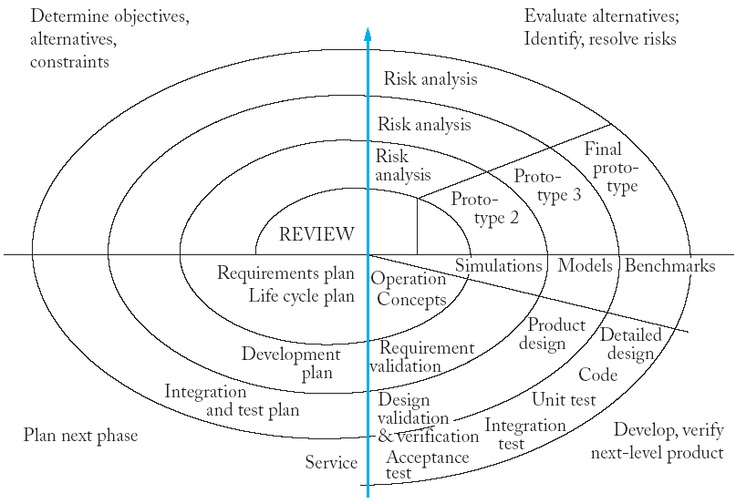
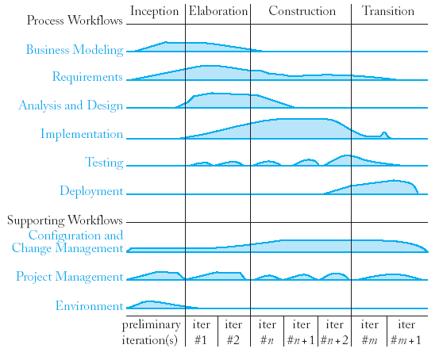
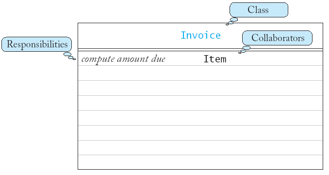
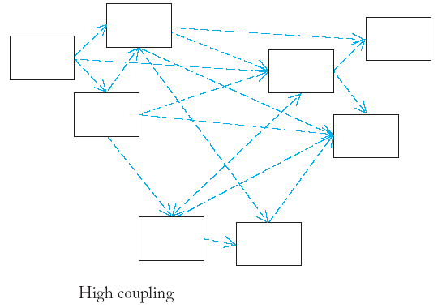
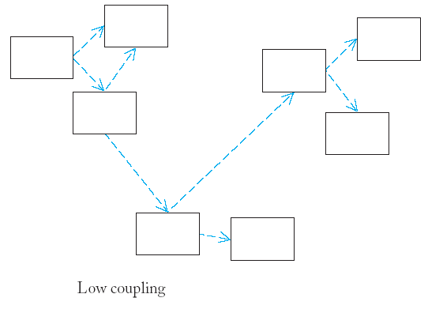
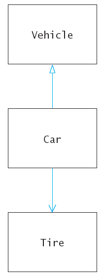
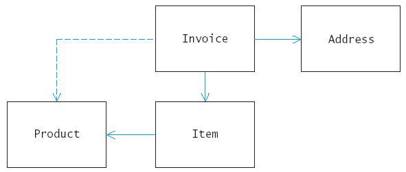
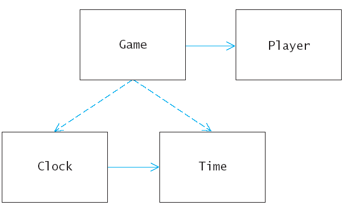

class Tire {
...
private:
string rating;
Circle boundary;
};
class Car : public Vehicle {
...
private:
vector<Tire> tires;
};

class Bank Account {
...
private:
Person* owner;
};
class Vehicle {
...
private:
vector<Tire> tires;
};
Sam's Small Appliances
100 Main Street
Anytown, CA 98765
Description Price Qty Total
Toaster 29.95 3 89.95
Hair dryer 24.95 1 24.95
Car vacuum 19.99 2 39.98
AMOUNT DUE: $154.78
Invoice Address Item Product Description Price Quantity Total Amount Due
Invoice Address Item Product
print the invoice
print the address
print the invoice Address
Item
get description
get unit price
print the item Product
get total price
print the invoice Address
add a product and quantity Item
Product

/**
Describes an invoice for a set of purchased products.
*/
class Invoice {
public:
/**
Adds a charge for a product to this invoice.
@param aProduct the product that the customer ordered
@param quantity the quantity of the product
*/
void add(Product p, int qunatity);
/**
Prints the invoice.
*/
void print() const;
};
/**
Describes a quantity to an article to purchase and its price
*/
class Item {
public:
/**
Computes the total cost of this item
@return the total price
*/
double get_total_price() const;
/**
Prints this item
*/
void print() const;
};
// etc.
By documenting first, you can share the documentation with others if you work in a team.
Player Clock Time Level Game Round
draw Time
set time
get hours and minutes
check if equal to another Time object
increment score
get level
play
read player information
do
{ play a round
ask whether player wants to play again
}
while (player wants to play again);
play
read player information
play Player
read player information Clock
play round Time

class Clock {
public:
/**
Sets current time.
@param t the time to set
*/
void set_time(Time t);
/**
Draws the lock face, with tick marks and hands.
*/
void draw() const;
};
class Player {
public:
/**
Increments the score. Moves to next level if
current level complete.
*/
void increment_score();
/**
Gets the current level.
@return the level
*/
int get_level() const;
};
class Game {
public:
/**
Plays the game while the player wants to continue
*/
void play();
/**
Reads player name and level.
*/
void read_player_information();
/**
Plays a round, with up to two guesses.
*/
void play_round();
};
time1.seconds_from(time2) == 0